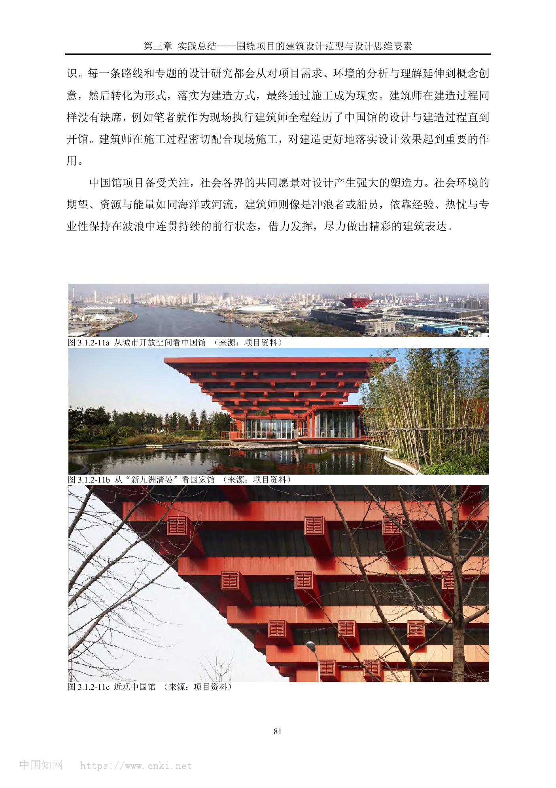
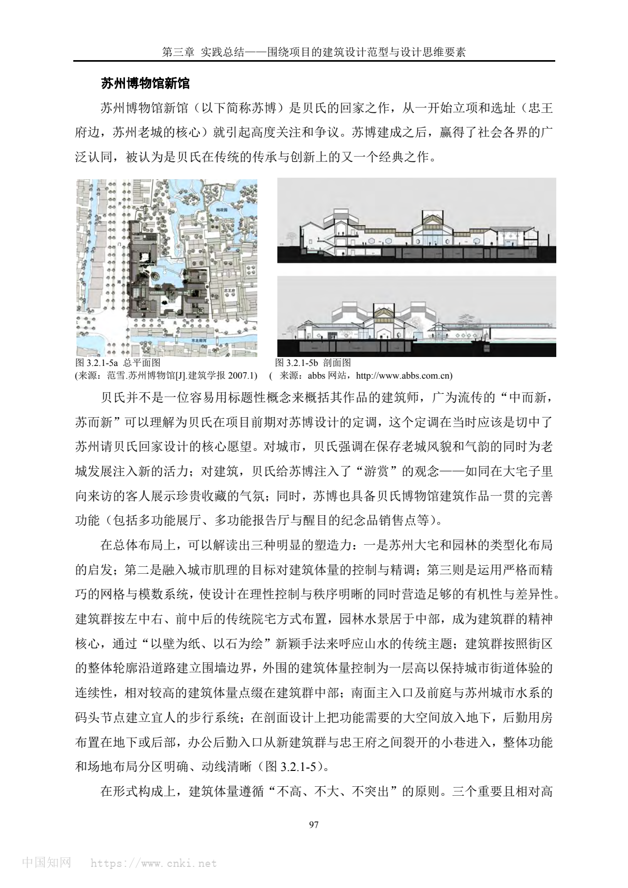

2019 年项目公司成立；2023-03-21 一期会议中心钢结构首吊；2025 年中一期会议中心预计建成；2026 年底配套酒店预计建成
深圳国际交流中心 / Shenzhen International Communication Center
深圳国际交流中心以华工院等单位参与的会议中心与配套酒店为核心，把深圳“城市会客厅”的外交、会议、酒店、花园与运营需求，转译为大跨度会议综合体、岭南庭院体验、低能耗酒店方向和数字化钢结构建造协同。
ARCHITECTURE CASE RESEARCH
从本地 case-packages 汇总真实案例资料，按项目事实、设计策略、场地关系、空间组织、结构材料与来源证据重新组织。
SELECTED CASES
优先展示已有本地图像的案例，让首页先有作品集式的视觉入口。
深圳国际交流中心以华工院等单位参与的会议中心与配套酒店为核心，把深圳“城市会客厅”的外交、会议、酒店、花园与运营需求，转译为大跨度会议综合体、岭南庭院体验、低能耗酒店方向和数字化钢结构建造协同。

杭州国家版本馆把废弃矿坑、良渚遗址限高、国家藏书楼功能和龙泉青瓷工艺整合成一套现代宋韵的当代山水建筑语言。

和美术馆将“和”的语义、岭南水庭与南越圆形观念，转译为圆形叠层、中央天井、双螺旋楼梯、水面和遮阳界面共同组织的美术馆空间系统。

济宁市图书馆把孔孟文化中的学宫、辟雍、明堂与杏坛意象，转译为九宫格结构秩序、剧场化中庭和半透陶棍界面，形成兼具城市客厅与知识圣地属性的当代公共图书馆。
ENTRY POINTS
类型、地区和研究主题都来自现有静态数据，v0 不编造额外案例。
未来可接入建筑案例研究 Skill 自动补充新案例。当前为静态原型入口，暂不执行生成。
CASE LIBRARY
深圳国际交流中心以华工院等单位参与的会议中心与配套酒店为核心，把深圳“城市会客厅”的外交、会议、酒店、花园与运营需求，转译为大跨度会议综合体、岭南庭院体验、低能耗酒店方向和数字化钢结构建造协同。
前海博物馆以“文明之树、时代明灯”为理念，将前海山海城格局、国家级文化设施的纪念性和开放型公共文化空间整合为一个高强度博物馆综合体。
???????????????????????????????????????????????????????????????
杭州国家版本馆把废弃矿坑、良渚遗址限高、国家藏书楼功能和龙泉青瓷工艺整合成一套现代宋韵的当代山水建筑语言。
和美术馆将“和”的语义、岭南水庭与南越圆形观念，转译为圆形叠层、中央天井、双螺旋楼梯、水面和遮阳界面共同组织的美术馆空间系统。
济宁市图书馆把孔孟文化中的学宫、辟雍、明堂与杏坛意象，转译为九宫格结构秩序、剧场化中庭和半透陶棍界面，形成兼具城市客厅与知识圣地属性的当代公共图书馆。

该案例把国家级会议功能、青岛山海港城格局、快速建造压力和后续城市公共使用，整合为一个兼具主场外交仪式性与海滨城市公共性的会议中心。
雷励贵州大项目活动营地把废弃乡村小学改造、轻量加建、本地材料工艺和青少年公益运营整合成一个持续服务乡村的营地系统。

LEGO House translates the logic of LEGO bricks into stacked public volumes, playable roof terraces, and color-coded interior learning experiences.
????????????????????????????????????????????????????????????????????

这个案例最值得学习的不是海边建筑如何取景，而是如何把剖面、身体移动、光、风和材料共同组织成一种可被公众持续使用的精神性空间。

项目通过东西向轴带重新组织稻河头、五巷街区、名人旧居、高层背景和新展馆，并以石材百叶幕墙、灰调模数和消隐化绿色技术形成当代泰州建筑品相。

中国馆把国家象征、世博大客流、展陈平层需求、屋顶园林、红色幕墙试板和地铁下穿约束组织成从概念到建造连续桥接的文化展示建筑。

泰州科学发展观展示馆把主题展示、稻河历史街区、多儿巷一号故居、中央水庭和绿色技术整合成一条有起承转合的参观叙事。

该项目把“四水归堂”的院落原型转译为开放中庭、片墙和垂直游线系统，以回应省级博物馆的公共性与安徽地域文化表达。

苏州博物馆新馆以低矮院落化布局、黑白灰材料转译、几何屋面和自然光，把苏州传统园林与民居语汇转化为现代公共文化建筑语言。

解放中路旧城改造把政府主导、居民回迁、保留老建筑、延续街巷肌理等复杂条件，转化为街巷结构、标准户型原型和品相对等的建造语言。
可以调整搜索词或清空筛选。AI 自动补充案例入口将在后续版本接入。
ABOUT
v0 只读取本地静态案例包，不接后端、不接数据库、不做真实登录。后续可以在这个基础上加入案例库管理、AI 生成、资料质量检查和研究工作流。